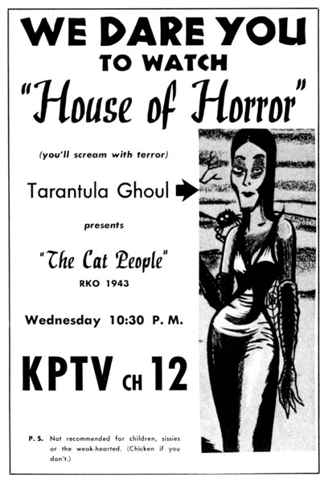

House of Horror
(The
Tarantula
Ghoul
Show)
October 9, 1957 -
November
26,
1958
|
House of Horror was a
weekly
series
of
horror movies, enlivened by (or, perhaps "endeadened" is
more appropriate) by hostess Tarantula
Ghoul
and
her
husband
Milton. Often on the show, her boa
constrictor snake "Baby" would be featured.

|
|
|
|
|
The
charming
hosts
of
House
of
Horror,
Milton
and
Tarantula Ghoul,
played
by
John
Hillsbury
and Suzanne
Waldron. |
|
TARANTULA
GHOUL
pokes
morbid
fun
at
everything
within
range
of
Portland's
KPTV
Nobody,
but
nobody,
is
safe
from
the
witty
but
acid
tongue
of
Tarantula
Ghoul,
a
cross
between
the
Charles
Addams
woman
and
a
"road
company"
Tallulah
Bankhead,
who
welcomes
viewers
to
her
House
of
Horror
in
Portland,
Ore.,
on
Wednesdays
(10:30
P.M.,
KPTV).
She
attacks
the
Highway
Commission
for
removing
the
few
decent
death
traps
left,
assails
the
City
Zoo
Commission
for
not
exhibiting
prehistoric
animals,
kids
the
D.A.R.
with
her
own
organization,
the
D.S.W.T.
(Daughters
of
the
Salem
Witchcraft
Trials).
She's
active
in
the
Black
Cross,
lectures
on
Second
Aid
and
keeps
her
finger
in
the
political
pie
through
her
party,
The
Cemeterians
(which
boasts
more
ex-presidents
than
any
other
political
group).
With
an
occasional
assist
from
Milton,
a
retired
grave-robber
turned
gardener,
Suzanne
Waldron
clowns
up
the
Tarantula
role
enough
to
win
family
acceptance
for
the
show.
|
|
|
|
The lovely Miss Ghoul awakens from her
beauty sleep. |
|
Taranch,
as
she's
known
off
camera,
introduces
the
films
either
with
a
special
set
or
from
her
"home"
--
a
weirdly-decorated
room
overlooking
a
run-down
cemetery
(which
she
refers
to
as
the
neighborhood)
and
a
patio
where
she
and
Milton
"plant
things."
For
Frankenstein
pictures
the
lab
was
recreated
for
her
entrance
from
the
operating
table.
For
the
Mummy
films
she
made
her
entrance
from
a
mummy
case.
For
Murders
in
the
Rue
Morgue
she
did
the
show
in
French
with
English
sub-titles.
King
Kong
was
presented
as
a
satire
on
This
Is
Your
Life
with
a
large
studio
audience
of
costumed
monsters
paying
tribute
to
a
live
chimp,
Kenya,
an
alleged
great,
great
grandson
of
Kong.
A
native
of
Portland,
Suzanne
describes
herself
as
having
been
"depressingly
tall,
thin
and
shy"
during
high
school.
But
at
Highland
University
in
Las
Vegas,
New
Mexico,
she
discovered
the
value
of
individualism
--
which
she
had.
Ironically,
her
first
dramatic
appearance
was
as
one
of
the
witches
in
Mac
Beth.
After
college,
stock
and
touring
shows,
she
returned
to
Portland
to
do
radio
commercials.
|
|
 |
|
House
of
Horror
mascot,
"Baby,"
was
often
seen
hanging
around
the
set
with
Tarantula Ghoul. |
|
Since
the
horror
show
started
in
October,
1957,
Suzanne's
been
carted
around
in
coffins,
appeared
with
gorillas,
held
press
parties
in
cemeteries,
etc.
Her
most
embarrassing
moment
--
she
fell
asleep
in
a
coffin
and
did
NOT
arise
as
scheduled
for
half-time
ceremonies
of
a
nationally-telecast
football
game.
Her
most
frightening
time
--
appearing
on
stage
with
an
11-foot
boa
constrictor
which,
at
the
last
minute
replaced
the
smaller,
less
active
snake
she
was
used
to.
In
her
free
time
Suzanne
reads
and
listens
to
hi-fi
in
an
apartment
she
shares
with
an
overly-friendly
Great
Dane
named
Frankenstein.
She
likes
people,
all
kinds
of
music
(she
made
two
R
'n'
R
records
--
"King
Kong"
and
"Graveyard
Rock"),
dancing,
art,
skiing,
riding,
and
surf-swimming.
She
still
does
commercials
and
spoofs
the
Movie
of
the
Month,
looking
ahead
to
the
day
the
horror
craze
joins
Davy
Crockett,
but
the
way
things
look
now,
that
may
be
a
long
way
off.
Article
in
TV
Star
Parade,
February
1959 |
|
|
LISTEN
TO
AUDIO
FROM
TARANTULA
GHOUL!
Tarantula
Ghoul
and
The
Cryptkickers
recorded
two
novelty
songs
in
the
late
1950s,
"Graveyard
Rock"
and
"King
Kong."
Click
the
links
below
to
listen!
Graveyard
Rock
(mp3)
King
Kong
(mp3)
Thanks
to
Suzanne
Waldron's
son,
Michael
Petty,
for
sending
these
songs
to
Yesterday's
KPTV.
|

This
ad
from
October
23,
1957
includes
a
P.S.
at
the
bottom:
"Not
recommended
for
children,
sissies
or
the
weak-hearted."
Then
adds,
"(Chicken
if
you
don't").
|

An
ad
from
Prevue
Magazine,
June
29,
1958. |
|
House
of
Horror BROADCAST
HISTORY |
OCT
1957
-
:
WED
10:30PM-12:30AM
JUN
1958
-
:
WED
10:00PM-12:00MID
-
NOV
1958:
WED
10:30PM-12:30AMM-12:00PM |

I
recall
going
to
the
studio
before
the
show
was
televised
and
seeing
the
procession
of
automobiles
that
were
going
to
be
seen
outside
of
the
KPTV
door
as
a
drive-by
advertising
for
the
car
dealer. Each
car
would
pull
up
in
the
lights
and
the
announcer
would
describe
it
and
chat
about
the
unique
features
of
the
car
and
then
show
the
price.
We
were
allowed
to
sit
up
above
the
set
where
Tarantula
Ghoul
and
her
cast
of
characters
would
perform.
They
introduced
the
film
on
the
House
of
Horrors. Sometimes
a
hand
would
come
out
of
a
pumpkin,
she
had
a
cat
on
the
set,
and
the
characters
looked
scary
and
all
contributed
to
the
sense
of
ghouls,
horrors,
and
monsters
who
scared
kids
on
the
TV. We
loved
it
and
liked
to
see
the
colorful
costumes,
sets,
and
characters,
then
all
seen
in
black
in
white
by
the
audience.
What
I
loved
was
how
sweet
Tarantula
Ghoul
was
to
us
kids. She
came
out
prior
to
the
show
and
chatted
with
us
asking
about
who
we
were,
what
we
were
doing,
and
where
we
were
going
to
school,
and
what
we
wanted
to
do
with
our
lives. She
was
a
cool
actress
on
the
set
and
made
the
home
audience
and
us,
in
the
peanut
cage,
feel
cool
about
the
monsters. She
never
ever
raised
her
voice
by
shouting
or
putting
anyone
down. To
say
the
least,
we
were
tantalized
by
the
experience
of
watching
KPTV
television
cameras
(old
black
and
white
RCA
sets
like
the
sets
now
in
the
Smithsonian
museum),
how
a
production
can
be
pulled
off
with
the
pre-planning,
acting,
directing
and
producing.
This
experience
and
all
got
me
interested
in
media.
I
later
got
a
Masters
in
Educational
Media
form
Western
Oregon
University
and
a
Ph.D
in
Broadcast
Communications
from
the
University
of
Oregon
using
black
and
white
RCA
cameras
like
what
I
earlier
had
seen
in
the
KPTV
studios.
I
thank
KPTV
for
allowing
us
kids
and
especially
me
to
view
these
programs
as
an
interested
party
in
how
mass
media
communicates
to
society.
Today,
I
am
retired
and
still
watch
KPTV
from
its
new
studios. When
I
go
to
games
at
PGE
park,
I
drift
by
to
see
the
old
location
of
the
studio
that
launched
a
thousand
ships,
especially
mine,
to
seek
something
special
in
our
lives,
the
art
of
performing
and
using
a
medium
to
entertain,
instruct,
and
inform
people
about
what
life
can
offer
and
what
possibilities
are
available.
Dean
Osterman
  
This
page
last
updated
on
August 24, 2025 |